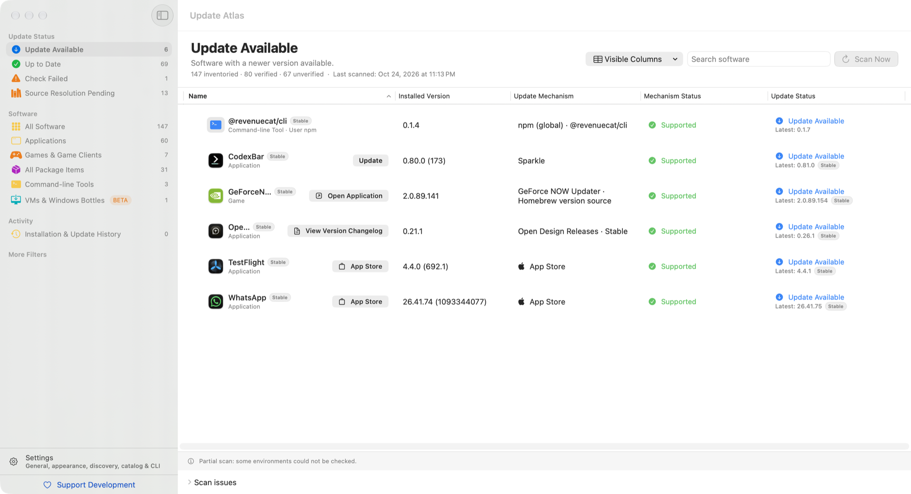

Mac’inizdeki her uygulama. Her güncelleme denetlenir.
Update Atlas uygulamalarınızı, oyunlarınızı ve komut satırı araçlarınızı bulur; hangi güncellemelerin gerçek olduğunu ve nereden yükleneceğini gösterir.
Ücretsiz ve açık kaynak. Apple çipli bir Mac’te macOS 14 veya üstü gerekir.

Her şey tek ve anlaşılır bir listede.
Mac’inizde neyin yüklü olduğunu ve her birinin güncellemesini kimin yönettiğini bir bakışta görün.
Tüm yazılımlarınız
Uygulamalar; Steam, GOG ve Epic oyunları; Homebrew, npm ve Python paketleri ile komut satırı araçları yan yana.
Tahmin değil, kanıt
Bir uygulama ancak güvenilir bir sürüm denetiminden sonra güncel olarak işaretlenir. Doğrulanamayanlar açıkça belirtilir.
Doğru yerden güncelleyin
Her güncellemenin sahibini görün: App Store, Sparkle, Homebrew ya da geliştirici. Desteklenen güncellemeler yalnızca siz onayladığınızda başlar.
Menü çubuğunda
Menü çubuğunda sade bir güncelleme sayacı ve yeni güncellemeler doğrulandığında bildirimler.
Uygulamalar ve içindekiler
Uzantılar, eklentiler ve yardımcı araçlar, onları yöneten uygulamanın altında gruplanır.
Gizlilik öncelikli
Hesap yok, analiz yok, reklam yok. Update Atlas yazılım listenizi hiçbir yere göndermez.
Pencere kapalıyken bile el altında.
Update Atlas menü çubuğunda çalışmayı sürdürebilir, seçtiğiniz aralıklarla denetim yapabilir ve her güncellemeyi tek tıkla açabilir.
Terminal’de de kendi evinde.
Birlikte gelen komut satırı aracı aynı envanteri JSON olarak verir; betikler ve yapay zekâ asistanları için hazırdır.
$ update-atlas check --updates-only
$ update-atlas scan --offline | jq '.summary'
$ update-atlas skill > SKILL.mdÜcretsiz ve açık kaynak.
Update Atlas tek bir geliştirici tarafından geliştiriliyor ve GPL-3.0 lisansıyla yayımlanıyor. Size zaman kazandırıyorsa geliştirilmesine destek olabilirsiniz.
Sık sorulan sorular
Update Atlas gerçekten ücretsiz mi?
Evet. Reklam, hesap ya da ücretli sürüm yok. Destek tamamen isteğe bağlıdır ve hiçbir özelliğin kilidini açmaz.
Uygulamalarımı otomatik olarak günceller mi?
Hayır. Taramalar yalnızca bilgi okur. Bir güncelleme ancak siz seçip onayladığınızda ve yalnızca sahibi onu güvenle yükleyebiliyorsa başlar.
Mac’imden hangi veriler çıkar?
Yazılım listeniz Mac’inizde kalır. Sürümleri denetlemek için Update Atlas uygulamalarınızın resmî güncelleme kaynaklarına bağlanır ve herkese açık yazılım kataloğunu bu siteden indirir.
Intel Mac’lerde çalışır mı?
Update Atlas, macOS 14 veya üstü yüklü Apple çipli bir Mac gerektirir. O Mac’teki Intel uygulamalarını yine de listeler.
Bir uygulama eksik ya da yanlış görünüyor. Nasıl yardım edebilirim?
Uygulamanın adını ve nereden indirdiğinizi belirterek GitHub’da bir konu açın. Yazılım kataloğu uygulamadan bağımsız olarak güncellenir.